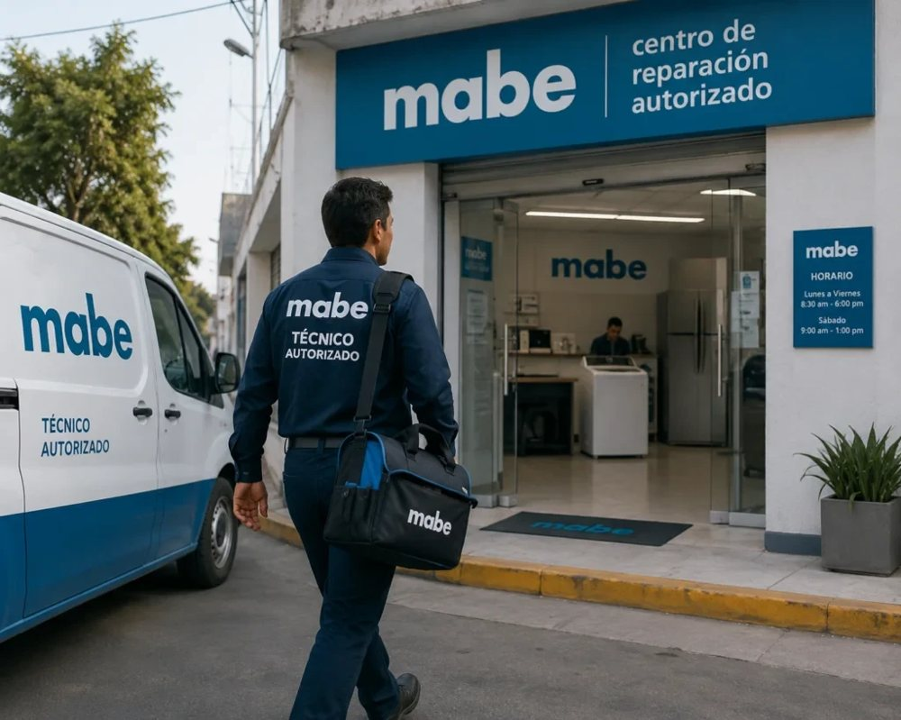
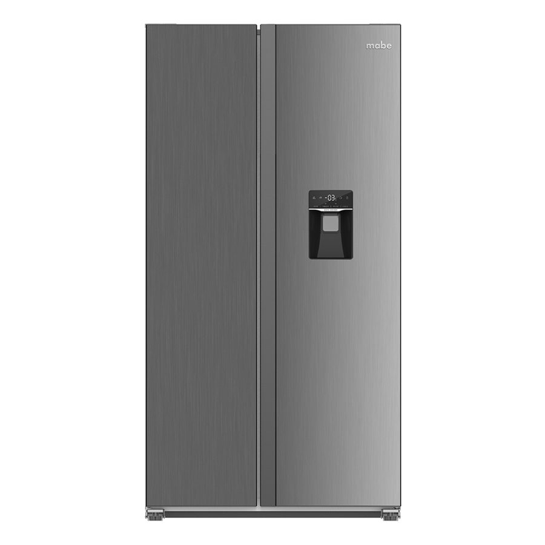

Servicio técnico Mabe en Cartagena: Damos servicio técnico a domicilio para neveras y nevecones Mabe en Cartagena, especializados en su sistema No Frost y el diagnóstico de compresor.

Llame directamente o escriba por WhatsApp al mismo número para agendar su servicio técnico Mabe en Cartagena. Respondemos en minutos.
☏ Escribir por WhatsApp
Contamos con técnicos certificados en la tecnología específica de Mabe (sistemas No Frost y control de humedad). Somos la opción confiable de servicio técnico Mabe en Cartagena para neveras y nevecones Mabe, con foco en el sistema No Frost y el rendimiento del compresor.
Así de fácil es agendar su servicio técnico Mabe a domicilio.
Cuéntenos por WhatsApp o al +57 321 799 6144 la marca y la falla de su nevera Mabe.
Confirmamos fecha y hora, con el tiempo estimado de llegada según su zona en Cartagena.
El técnico revisa el equipo en su domicilio y le explica la falla y el costo antes de reparar.
Reparamos con repuestos originales Mabe y entregamos garantía escrita.

Un resumen rápido. Vea la guía completa con causas y diagnóstico detallado.
Falla común: Exceso de hielo en el congelador, poco enfriamiento abajo.
Síntomas: Bloqueo en el ducto de aire por falla del sistema No Frost: puede ser la resistencia, el bimetálico o el termofusible.
Falla común: La nevera no enciende o el motor hace un clic y se apaga.
Síntomas: Problemas con el relay, el protector térmico o el compresor principal. En el clima de Cartagena los motores pueden sobrecalentarse; requiere diagnóstico de gas refrigerante y motor.
Falla común: Fugas de agua o el dispensador no funciona.
Síntomas: Válvulas de agua obstruidas o con fugas, o fallas en la tarjeta de control del dispensador. Requiere repuestos Mabe originales para sellar correctamente.
Si su nevera Mabe presenta alguna de estas señales, es momento de agendar una revisión antes de que la falla se agrave.
Guía completa de diagnóstico: síntomas, causas y solución para cada falla frecuente de su nevera Mabe.
Cuidados específicos para la tecnología sistemas No Frost y control de humedad y el clima de Cartagena.
Compresores, tarjetas electrónicas y empaques 100% genuinos, con garantía escrita.
Sin importar la línea o el modelo de su equipo Mabe, nuestros técnicos tienen experiencia específica en cada una.
Nevecones de dos puertas verticales, con dispensador de agua y hielo y acabados en acero inoxidable o negro mate.
Neveras compactas con la tecnología Home Energy Saver de Mabe, pensada para reducir el consumo eléctrico.
Control de temperatura digital y alarma de puerta abierta, disponibles en varios tamaños para hogares de Cartagena.
Una nevera o nevecón Mabe bien mantenido puede durar entre 12 y 15 años en Cartagena, siempre que se le haga limpieza de condensador y revisión de sellos con regularidad. La humedad y la salinidad del ambiente costero aceleran el desgaste, por lo que el mantenimiento preventivo hace una diferencia real en la vida útil del equipo.
Como regla general: si su equipo Mabe tiene menos de 8 años y el costo de la reparación es menor al 40% del valor de una nevera nueva equivalente, reparar es casi siempre la opción más económica. Si el compresor ya fue reemplazado antes o el equipo supera los 12-15 años, conviene evaluar el costo de una reparación mayor frente a la compra de un equipo nuevo.
En cualquier caso, nuestro diagnóstico es honesto: si no vale la pena reparar, se lo decimos antes de cobrar cualquier trabajo.
Repuesto original Mabe para fallas de arranque o enfriamiento nulo.
Reemplazo por daños de picos de voltaje, comunes en Cartagena.
Para fallas de agua o hielo en nevecones con dispensador.
Evitan fugas de aire frío y sobreesfuerzo del compresor.
Si su nevera o nevecón Mabe dejó de enfriar, hace ruidos extraños o presenta hielo donde no debería, no está solo: es una de las consultas más frecuentes que recibimos en Cartagena. El clima costero —calor constante, humedad alta y brisa salina— somete a los electrodomésticos a un desgaste mayor que en ciudades del interior del país, y las neveras Mabe con tecnología sistemas No Frost y control de humedad no son la excepción. Esta guía resume lo que debe saber antes de agendar un servicio técnico Mabe en Cartagena.
La tecnología sistemas No Frost y control de humedad de Mabe está diseñada para ser más eficiente y silenciosa que los sistemas convencionales, pero también es más sensible a instalaciones incorrectas, mantenimiento nulo o fluctuaciones de voltaje comunes en la red eléctrica local. Por eso recomendamos un servicio técnico con experiencia específica en neveras y nevecones Mabe, con foco en el sistema No Frost y el rendimiento del compresor. Un diagnóstico hecho por alguien sin experiencia específica en esta tecnología puede terminar cambiando piezas que no eran el problema real, y encareciendo la reparación innecesariamente.
Entre los motivos más comunes por los que nuestros clientes en Cartagena solicitan un técnico Mabe están: Neveras No Frost (acumulación de hielo) (exceso de hielo en el congelador, poco enfriamiento abajo); Rendimiento del compresor (la nevera no enciende o el motor hace un clic y se apaga); Nevecones con dispensador de agua o hielo (fugas de agua o el dispensador no funciona). Si identifica alguno de estos síntomas, lo recomendable es desconectar el equipo solo si hay riesgo eléctrico visible (cables pelados, olor a quemado) y agendar una visita cuanto antes: muchas fallas menores se convierten en daños mayores —y reparaciones más costosas— si se dejan pasar varias semanas.
Un buen servicio técnico Mabe en Cartagena debe ofrecerle tres cosas como mínimo: diagnóstico honesto antes de cobrar por repuestos, piezas 100% originales con garantía escrita, y técnicos que conozcan la tecnología específica de su equipo y no solo refrigeración genérica. Es exactamente lo que ofrecemos: revise las secciones de fallas comunes, mantenimiento preventivo e instalación de esta misma página para más detalle sobre cada etapa del servicio.

Si su nevecón Mabe tiene dispensador de agua o fabricador de hielo, el filtro debe cambiarse aproximadamente cada 6 meses. Un filtro vencido reduce el flujo de agua, deja sabor u olor extraño, y puede ensuciar el hielo.
Por qué conviene un servicio con experiencia específica en Mabe.
Un técnico especializado en Mabe conoce a fondo sistemas No Frost y control de humedad, en vez de aplicar soluciones genéricas de refrigeración.
Evita el ensayo y error de cambiar piezas que no eran el problema, algo común cuando el diagnóstico lo hace alguien sin experiencia en la marca.
Un servicio especializado Mabe respalda su diagnóstico con garantía escrita, porque conoce las fallas típicas del equipo.

"Diagnóstico honesto para el compresor de mi nevera en Bocagrande. Repuesto original y garantía."
— Yolima P. (Bocagrande)"Mantenimiento preventivo por la humedad, muy buena atención."
— Esteban V. (Manga)"Cambio de termostato con garantía escrita. Recomendados en Crespo."
— Doris M. (Crespo)El diagnóstico se hace en la misma visita; si hay que cambiar el compresor, coordinamos una segunda visita con el repuesto original.
Casi siempre es una falla del sistema No Frost (resistencia, bimetálico o termofusible), común por la humedad de Cartagena.
Sí, instalamos filtros de agua compatibles y originales Mabe, recomendados cada 6 meses para mantener el sabor del agua y del hielo.
Cubrimos Bocagrande, Manga, El Laguito, Castillogrande, Crespo, Centro Histórico, Pie de la Popa y Turbaco. Si su zona no aparece, escríbanos para confirmar disponibilidad.
Ver todas las preguntas sobre Mabe → · preguntas generales del sitio →
Reparamos neveras y nevecones de todas las marcas en Cartagena.
Servicio a domicilio en toda la ciudad.
Cuéntanos la falla de tu nevera Mabe. Te confirmamos por WhatsApp en minutos.